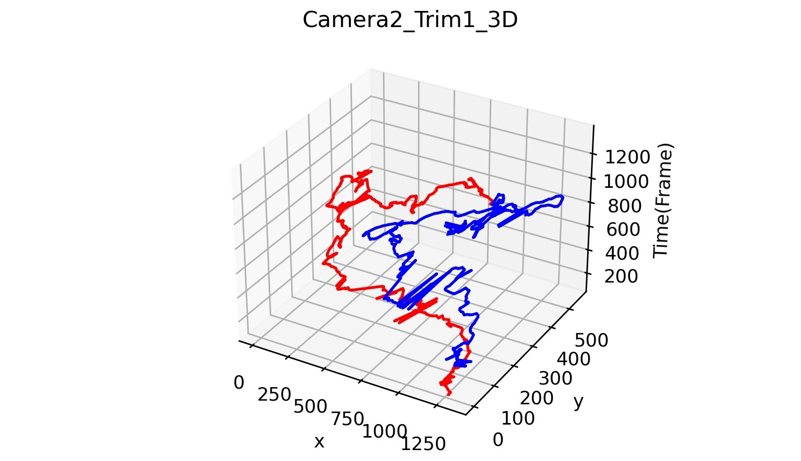
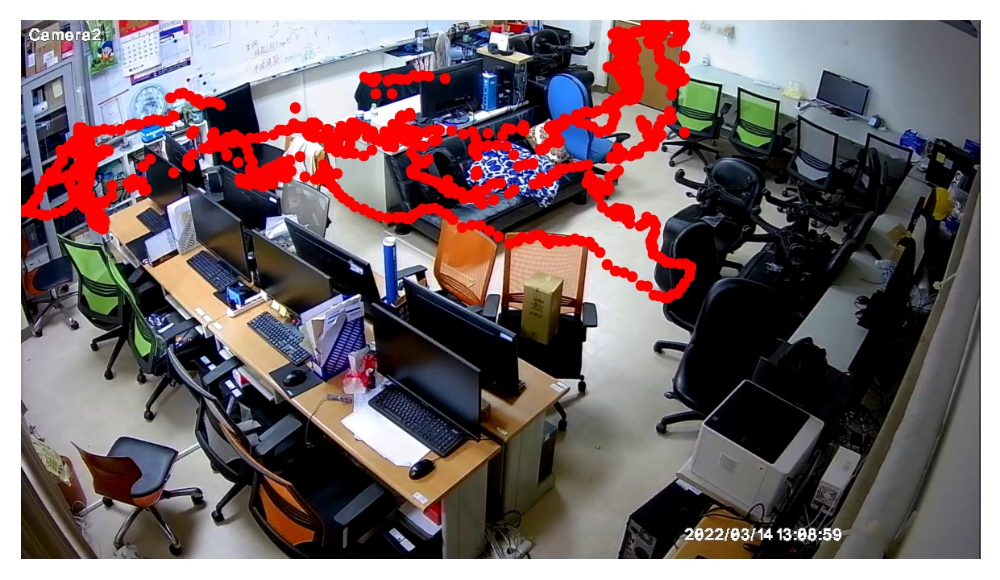

{% include "head_part.html" %}
{% include "sidebar_part.html" %}
{% include "topbar_part.html" %}
關節點移動軌跡偵測結果
Generate Report
人像關節點偵測-影像
Sorry, your browser doesn't support embedded videos.
3D人物軌跡圖-圖片

靜態軌跡圖-圖片

動態軌跡圖-GIF
{% include "footer_part.html" %}
{% include "modals_and_scripts_part.html" %}